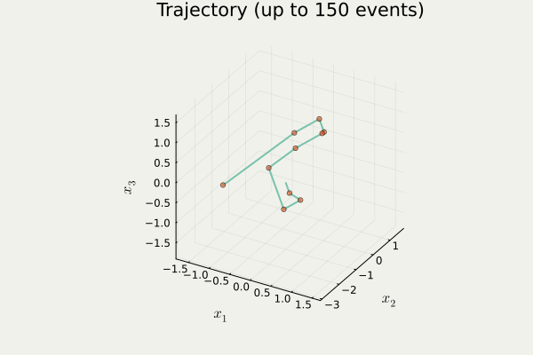

総研大５年一貫博士課程・中間評価
総合研究大学院大学（５年一貫博士課程）
1/10/2025
1 Gauss 過程の上限の集中不等式
A Blog Entry on Bayesian Computation by an Applied Mathematician
$$
$$
1.1 等周不等式
体積測度 \mu が等しい可測集合のうち，球が最小の測度を持つ．
- Borel 可測集合 A\subset\mathbb{R}^n に関して，\epsilon-閉近傍 を次のように定める： A_\epsilon:=\left\{x\in\mathbb{R}^n\mid d(x,A)\le t\right\},\qquad t>0.
- 実は A は Borel 可測とは限らないが，Lebesgue 可測ではある．
古典的集中不等式 (Schmidt, 1948)-(Lévy, 1951)
n-次元球面 S^n\subset\mathbb{R}^{n+1} に関して，A\subset S^n を Borel 可測，C を同体積の（測地）球とすると， \mu(C_\epsilon)\le\mu(A_\epsilon),\qquad\epsilon>0.
1.2 正規分布に関する等周不等式
(Giné and Nickl, 2021, p. 31) 定理 2.2.3
\gamma_n を \mathbb{R}^n 上の標準正規分布とする．A\subset\mathbb{R}^n を Borel 可測， H_a:=\left\{x\in\mathbb{R}^n\mid(x|u)\le a\right\},\qquad a\in\mathbb{R},u\in\mathbb{R}^n\setminus\{0\}, を同体積の affine 半空間 とすると， \gamma_n(H_a+\epsilon B^n)\le\overline{\gamma_n}(A_\epsilon+\epsilon B^n),\qquad\epsilon>0.
\mathbb{R}^n だけでなく \mathbb{R}^\infty 上でも成り立つ．
1.3 中央値周りへの集中不等式
\{X_t\}_{t\in T} を可分な中心 Gauss 過程で，ほとんど確実に上限 \|X\|_\infty が有限であるとする．このとき，\|X\|_\infty の中央値 M に関して，1 \operatorname{P}\biggl[\biggl|\|X\|_\infty-M\biggr|>u\biggr]\le\exp\left(-\frac{u^2}{2\sigma^2}\right),\qquad u>0,\sigma^2:=\sup_{t\in T}\mathrm{V}[X_t].
同様の命題を平均値の周りに関しても示せる．係数 2 が前につくものは (Gross, 1975) による正規分布に関する対数 Sobolev 不等式から導ける．
2 Markov 過程の収束
2.1 劣指数エルゴード定理
ステートメント
E を Polish距離空間，X を Feller-Dynkin 過程とする．連続関数 V:E\to[1,\infty) が存在して後述の２条件を満たすならば，任意の T>0 に対して C>0 が存在して次が成り立つ： \|P^t(x,-)-P^t(y,-)\|_\mathrm{TV}\le C\frac{V(x)+V(y)}{\lambda(t)},\qquad x,y\in E,t\ge T. \lambda(t):=\Phi^{-1}(t),\Phi(u):=\int^u_1\frac{ds}{\phi(s)}.
この V は ドリフト関数 ともいう．証明法は (Kulik, 2018) が扱う skelton 連鎖 X_n:=X_{hn}\;(h>0,n=1,2,\cdots) に帰着する方法と，再起過程 (regeneration process) を用いた (Hairer, 2021) による直接的方法がある．
2.2 成立条件
成立条件
条件１：弱いドリフト条件
ある K\in\mathbb{R} と全射かつ単調増加な狭義凹関数 \phi:\mathbb{R}_+\to\mathbb{R}_+ が存在して V(X_t)-Kt+\int^t_0\phi(V(X_s))\,ds は任意の x\in E に関して \operatorname{P}_x-優マルチンゲールである．
条件２：強い局所 Dobrushin 条件
任意の c\ge1 に関して下部集合 V^{-1}([1,c]) はコンパクトで，ある h>0 が存在して P^h は V^{-1}([1,c]) 上局所 Dobrushin である： \sup_{(x,y)\in B_c}\|P^h(x,-)-P^h(y,-)\|_\mathrm{TV}<2,\qquad B_c:=\left\{(x,y)\in E^2\mid V(x)+V(y)\le c\right\}.
2.3 Langevin 拡散のエルゴード性
3 最適輸送
4 Zig-Zag サンプラー
Output from anim_traj() in PDMPFlux.jl package